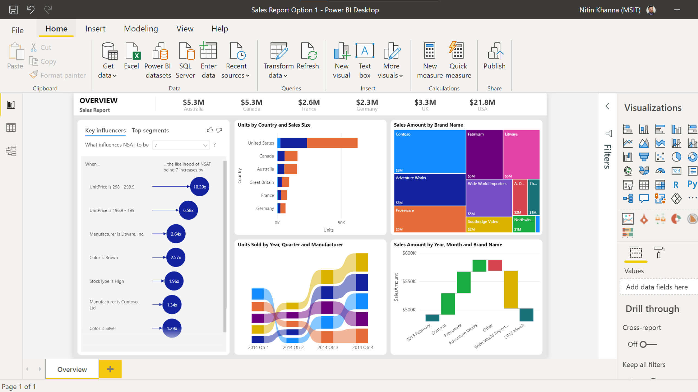

Power BI é uma ferramenta que utiliza de um coleção de serviços de aplicativos, software e conectores de forma a transformar os dados em informações coerentes, interativas e agradaveis visualmente.
Basicamente possui três componentes básicos:
Dessa forma, é possível gerar relatórios com as mais diversas aparências e interattividades

Conheça um pouco mais sobre vendo o vídeo abaixo:
Referências
HART, M. O que é Power BI? Microsoft, 2020. Disponivel em: https://docs.microsoft.com/pt-br/power-bi/fundamentals/power-bi-overview. Acesso em: 17 fev. 2021.